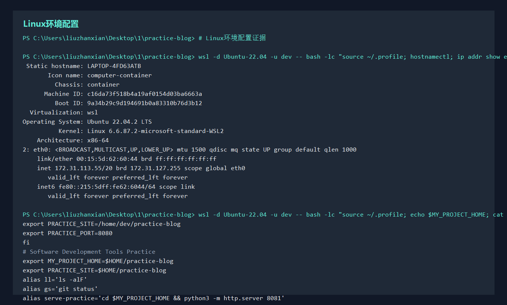
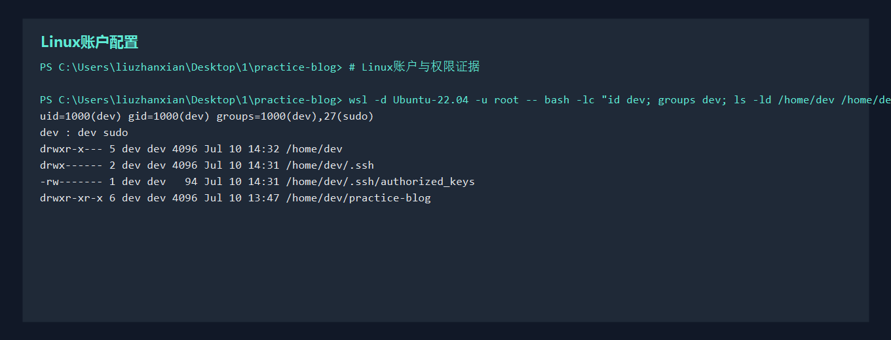

实验目标
完成一套可用于部署的 Linux 环境配置，使它具备可访问网络地址、清晰主机名、独立开发用户、可追踪的环境变量配置和合理的文件权限。
网络与系统配置
hostnamectl
ip addr
echo $PATH
cat ~/.bashrc
sudo cat /etc/profile建议使用 NAT + Host-Only 双网卡。Host-Only 地址固定后，宿主机可以稳定通过 SSH 连接虚拟机。
账户与权限配置
sudo adduser dev
sudo usermod -aG sudo dev
id dev
groups dev
ls -la /home/dev
chmod 755 /home/dev/practice-blog账户配置要体现“普通用户日常开发，sudo 只在系统管理时使用”的原则。
验收证据


| 评分项 | 建议截图 |
|---|---|
| Linux环境配置 | ip addr、hostnamectl、echo $PATH、profile 配置文件。 |
| Linux账户配置 | id dev、groups dev、home 目录权限、关键文件权限修改。 |